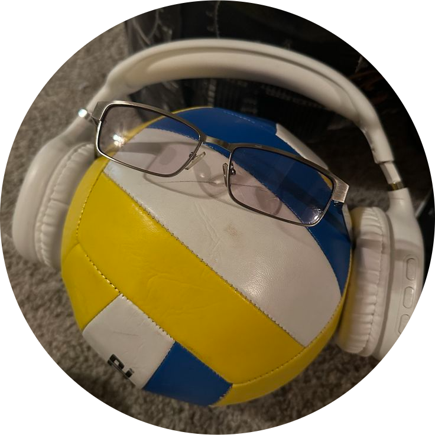
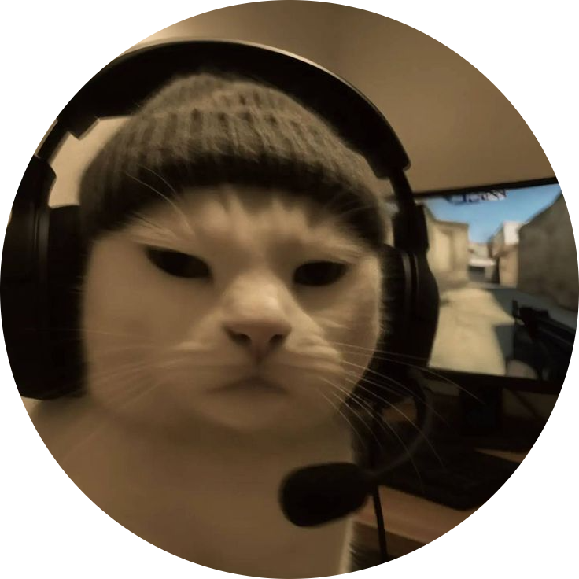
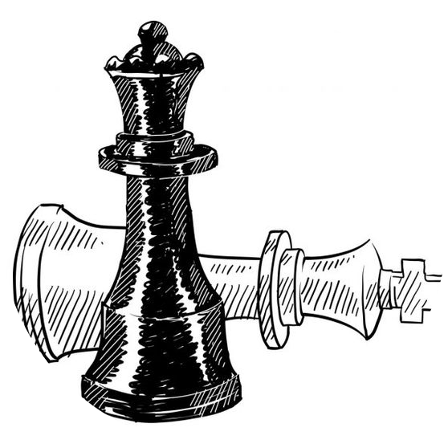
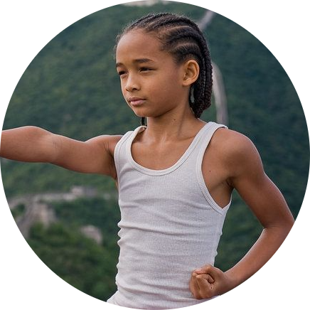
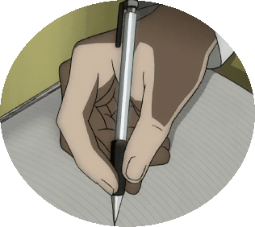
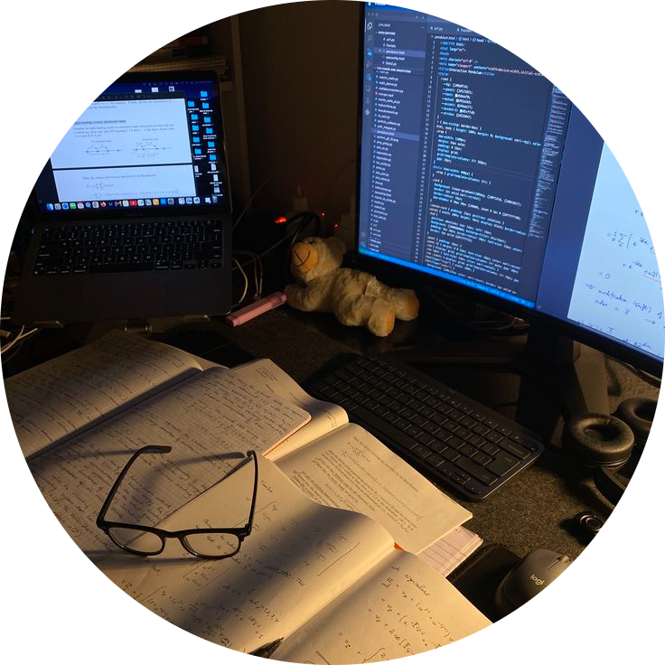

I'm Aya.
a programmer.


I am a year 11 at Te Kura Correspondence School. I enjoy reading, playing chess, and making art. My favourite sport is volleyball. I am also very passionate about Women and Youth empowerment. I believe in giving youth opportunities to develop their skills, confidence and support they need to set a path for themselves. My best subject in school is Digital Technology. This is because I do lots of extra activities outside of school to do with programming and digital technologies. I also love to teach and run workshops for youth.

I got into volleyball from just passing a volleyball with my friends at lunch. After a while, I wanted to go further and get better, so I joined a local club. I enjoy the sport a lot and train every Saturday afternoon.

Like many teenagers, I enjoy gaming a lot. I play mobile games like Clash Royale, Block Blast, CODM (Call of Duty Mobile), and more. I also play games on my laptop like Minecraft, Valorant, and Roblox.

In 2022, there was a chess tournament in my school. At the time, I knew the basics and was keen to join in. When I lost in round 2, I decided I wanted to get better at it. I watched videos on chess openings, made friends who were good at chess, and got a lot better. By the time the next tournament came around, I won. Now, chess is an on and off hobby, and I like to play on chess.com in my free time (don't ask what my elo is!!)

When I was 7 years old, I started Karate. I did it for about 2 years until I quit. After another 2 years I joined back again. I enjoy sparring, conditioning, and going to tournaments. I'm currently 5th Kyu.

I started doing art when I was 12 because I loved drawing and being creative. I began by sketching and using references a lot, which helped me learn. As I got more confident, I started using pastels as they are fun to use and help me add colour and shading to my drawings. I also have an Instagram account where I share my artwork at ayaekhallaf

I'm very involved in programming and tech activities. I love learning new things and taking courses to do with technology. I'm particularly interested in areas like Cybersecurity, AI and development. I'm also passionate about spreading my knoweldge on technology to future generations :)